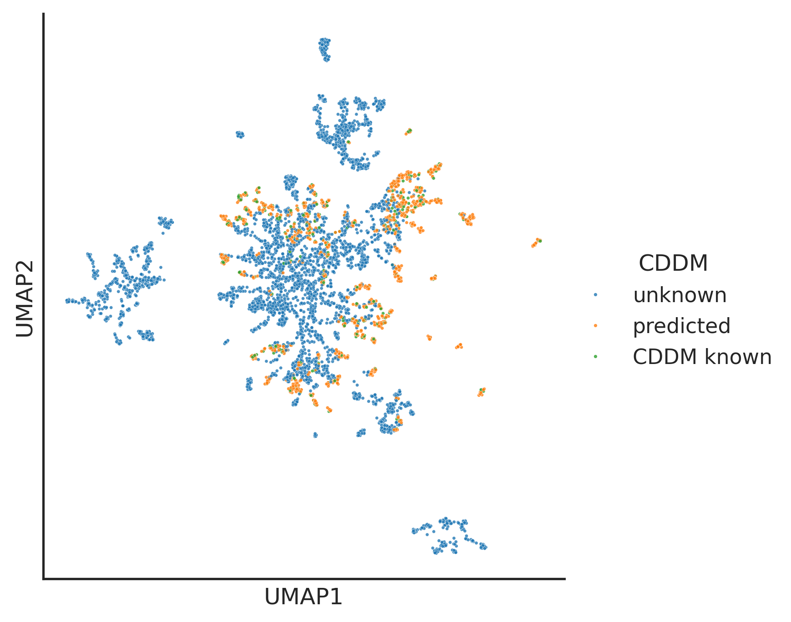
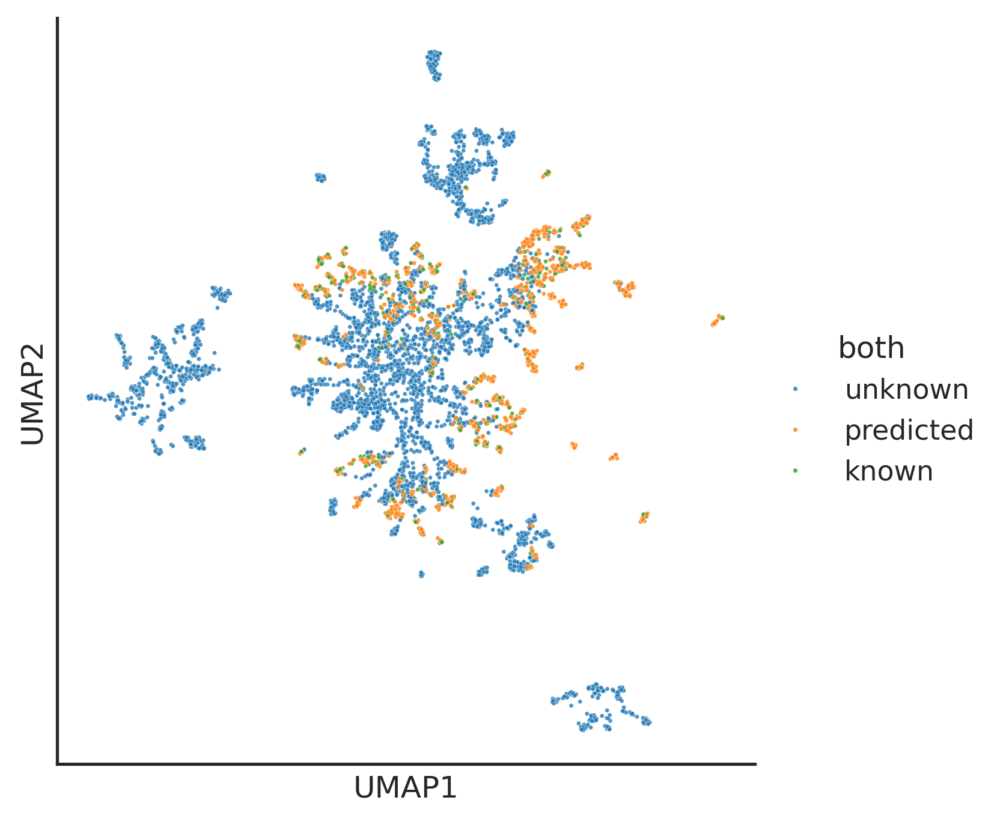

import pandas as pd
from katlas.train import *
from katlas.dnn import *
from fastai.vision.all import *
from katlas.pssm import *Predict
cddm_unk = pd.read_parquet('out/kd_similar_cddm.parquet')
cddm_unk = cddm_unk[cddm_unk.within_threshold].copy()cddm_t5 = pd.read_parquet('train/cddm_t5.parquet')cddm_t5| -20P | -19P | -18P | -17P | -16P | -15P | -14P | -13P | -12P | -11P | ... | T5_1014 | T5_1015 | T5_1016 | T5_1017 | T5_1018 | T5_1019 | T5_1020 | T5_1021 | T5_1022 | T5_1023 | |
|---|---|---|---|---|---|---|---|---|---|---|---|---|---|---|---|---|---|---|---|---|---|
| index | |||||||||||||||||||||
| P12931_SRC_HUMAN_KD1 | 0.054538 | 0.048428 | 0.054968 | 0.050526 | 0.045837 | 0.046599 | 0.060746 | 0.060644 | 0.056785 | 0.055857 | ... | -0.029892 | -0.003851 | -0.046692 | -0.028458 | 0.045105 | -0.029617 | -0.027618 | 0.011269 | -0.016449 | -0.025482 |
| P29320_EPHA3_HUMAN_KD1 | 0.044276 | 0.047875 | 0.047696 | 0.043803 | 0.046425 | 0.052716 | 0.053135 | 0.055231 | 0.040762 | 0.047015 | ... | -0.027512 | -0.005188 | -0.077637 | 0.002682 | 0.064209 | -0.064514 | -0.008598 | 0.026535 | -0.037079 | -0.015259 |
| P07332_FES_HUMAN_KD1 | 0.047231 | 0.045455 | 0.049569 | 0.049919 | 0.040729 | 0.047568 | 0.054400 | 0.056503 | 0.051623 | 0.043039 | ... | -0.005474 | -0.013451 | -0.029602 | -0.024857 | 0.021637 | -0.034576 | -0.022964 | -0.001378 | -0.011261 | -0.023193 |
| Q16288_NTRK3_HUMAN_KD1 | 0.044444 | 0.049404 | 0.046433 | 0.049689 | 0.041150 | 0.045557 | 0.049972 | 0.048603 | 0.045682 | 0.043382 | ... | -0.005585 | -0.014786 | -0.040314 | -0.037933 | 0.066162 | -0.023819 | -0.032288 | 0.012024 | -0.028931 | -0.015007 |
| Q9UM73_ALK_HUMAN_KD1 | 0.045748 | 0.044418 | 0.053976 | 0.046821 | 0.047921 | 0.051208 | 0.055587 | 0.056128 | 0.043950 | 0.045610 | ... | -0.011032 | -0.003567 | -0.054169 | -0.018936 | 0.078918 | -0.038788 | -0.020508 | 0.002199 | -0.035187 | -0.010475 |
| ... | ... | ... | ... | ... | ... | ... | ... | ... | ... | ... | ... | ... | ... | ... | ... | ... | ... | ... | ... | ... | ... |
| Q15746_MYLK_HUMAN_KD1 | 0.078947 | 0.100000 | 0.047619 | 0.093023 | 0.069767 | 0.046512 | 0.136364 | 0.044444 | 0.044444 | 0.086957 | ... | -0.045715 | -0.031281 | -0.023895 | -0.017593 | 0.056549 | -0.029312 | -0.033875 | -0.003410 | -0.010529 | -0.009941 |
| Q01973_ROR1_HUMAN_KD1 | 0.097561 | 0.024390 | 0.024390 | 0.219512 | 0.024390 | 0.000000 | 0.073171 | 0.071429 | 0.047619 | 0.190476 | ... | 0.012825 | -0.011787 | -0.033295 | -0.045105 | 0.103088 | 0.009338 | 0.001254 | 0.006546 | 0.001157 | -0.024689 |
| O14976_GAK_HUMAN_KD1 | 0.075000 | 0.200000 | 0.000000 | 0.073171 | 0.048780 | 0.024390 | 0.073171 | 0.073171 | 0.024390 | 0.097561 | ... | -0.039459 | -0.031219 | -0.009491 | -0.019928 | 0.039917 | -0.033051 | -0.032440 | -0.010689 | -0.023773 | -0.017456 |
| P15056_BRAF_HUMAN_KD1 | 0.095238 | 0.071429 | 0.047619 | 0.047619 | 0.095238 | 0.047619 | 0.047619 | 0.023810 | 0.047619 | 0.047619 | ... | -0.040222 | 0.001685 | -0.051697 | -0.018478 | 0.069092 | -0.016586 | -0.035858 | 0.005787 | -0.034332 | -0.030014 |
| Q6P0Q8_MAST2_HUMAN_KD1 | 0.046512 | 0.023256 | 0.023256 | 0.000000 | 0.139535 | 0.046512 | 0.069767 | 0.093023 | 0.000000 | 0.162791 | ... | -0.034576 | -0.037811 | -0.034607 | 0.004642 | 0.065857 | -0.053986 | -0.029907 | 0.019455 | -0.024567 | -0.000834 |
321 rows × 1967 columns
cddm_unk = pd.read_parquet('out/kd_similar_cddm.parquet')
cddm_unk = cddm_unk[cddm_unk.within_threshold].copy()len(cddm_unk),len(cddm_unk)(1204, 1204)cddm_unk| closest_pos_index | closest_dist | within_threshold | |
|---|---|---|---|
| index | |||
| A0A8I3S724_AURKA_CANLF_KD1 | O14965_AURKA_HUMAN_KD1 | 0.088972 | True |
| A0A8I5ZNK2_OXSR1_RAT_KD1 | O95747_OXSR1_HUMAN_KD1 | 0.029746 | True |
| A0JM20_TYRO3_XENTR_KD1 | Q06418_TYRO3_HUMAN_KD1 | 0.158522 | True |
| A0JNB0_FYN_BOVIN_KD1 | P06241_FYN_HUMAN_KD1 | 0.019767 | True |
| A0M8R7_MET_PAPAN_KD1 | P08581_MET_HUMAN_KD1 | 0.000000 | True |
| ... | ... | ... | ... |
| Q9Z2B9_KS6A4_MOUSE_KD1 | O75676_KS6A4_HUMAN_KD1 | 0.059483 | True |
| Q9Z2G7_GRK7_ICTTR_KD1 | Q8WTQ7_GRK7_HUMAN_KD1 | 0.102998 | True |
| Q9Z2R9_E2AK1_MOUSE_KD1 | Q9BQI3_E2AK1_HUMAN_KD1 | 0.145594 | True |
| Q9Z2W1_STK25_MOUSE_KD1 | O00506_STK25_HUMAN_KD1 | 0.025019 | True |
| W0LYS5_CAMKI_MACNP_KD1 | Q14012_KCC1A_HUMAN_KD1 | 0.175058 | True |
1204 rows × 3 columns
t5 = pd.read_parquet('out/uniprot_kd_t5.parquet')from katlas.plot import *info = pd.DataFrame(t5.index)info['CDDM_predicted'] = info.kd_ID.isin(cddm_unk.index).astype(int)
info['CDDM_known'] = info.kd_ID.isin(cddm_t5.index).replace({True:2,False:0})/tmp/ipykernel_865965/2171701244.py:2: FutureWarning: Downcasting behavior in `replace` is deprecated and will be removed in a future version. To retain the old behavior, explicitly call `result.infer_objects(copy=False)`. To opt-in to the future behavior, set `pd.set_option('future.no_silent_downcasting', True)`
info['CDDM_known'] = info.kd_ID.isin(cddm_t5.index).replace({True:2,False:0})info['CDDM'] = (info.CDDM_predicted+info.CDDM_known).replace({0:'unknown',1:'predicted',2:'CDDM known'})info.CDDM.value_counts()CDDM
unknown 4011
predicted 1204
CDDM known 321
Name: count, dtype: int64info = info.set_index('kd_ID')set_sns()plot_cluster(t5,method='umap',complexity=30,s=3,hue=info.CDDM,legend=True,palette='tab10',min_dist=0.6)
save_svg('fig/umap_cddm_unknown.svg')/home/sky1ove/git/KATLAS/katlas/.venv/lib/python3.12/site-packages/logomaker/../umap/umap_.py:1952: UserWarning: n_jobs value 1 overridden to 1 by setting random_state. Use no seed for parallelism.
warn(
Combine both
pspa_info = pd.read_parquet('raw/pspa_unk.parquet')info['both_known'] = pspa_info.PSPA_known|info.CDDM_knowninfo['both_known'].value_counts()both_known
0 5152
2 384
Name: count, dtype: int64info['both_predicted'] = pspa_info.PSPA_predicted |info.CDDM_predictedinfo['both_predicted'].value_counts()both_predicted
0 4242
1 1294
Name: count, dtype: int64info['both'] = (info.both_predicted+info.both_known).replace({0:'unknown',1:'predicted',2:'known',3:'known'})info| CDDM_predicted | CDDM_known | CDDM | both_known | both_predicted | both | |
|---|---|---|---|---|---|---|
| kd_ID | ||||||
| A0A075F7E9_LERK1_ORYSI_KD1 | 0 | 0 | unknown | 0 | 0 | unknown |
| A0A078BQP2_GCY25_CAEEL_KD1 | 0 | 0 | unknown | 0 | 0 | unknown |
| A0A078CGE6_M3KE1_BRANA_KD1 | 0 | 0 | unknown | 0 | 0 | unknown |
| A0A0G2K344_PK3CA_RAT_KD1 | 0 | 0 | unknown | 0 | 0 | unknown |
| A0A0H2ZM62_HK06_STRP2_KD1 | 0 | 0 | unknown | 0 | 0 | unknown |
| ... | ... | ... | ... | ... | ... | ... |
| W0LYS5_CAMKI_MACNP_KD1 | 1 | 0 | predicted | 0 | 1 | predicted |
| W0T9X4_ATG1_KLUMD_KD1 | 0 | 0 | unknown | 0 | 0 | unknown |
| W7JX98_KGP_PLAFO_KD1 | 0 | 0 | unknown | 0 | 0 | unknown |
| X5M5N0_WNK_CAEEL_KD1 | 0 | 0 | unknown | 0 | 1 | predicted |
| X5M8U1_GCY17_CAEEL_KD1 | 0 | 0 | unknown | 0 | 0 | unknown |
5536 rows × 6 columns
info.both.value_counts()both
unknown 3881
predicted 1271
known 384
Name: count, dtype: int64plot_cluster(t5,method='umap',complexity=30,s=3,hue=info.both,legend=True,palette='tab10',min_dist=0.6)
save_svg('fig/umap_both_unknown.svg')/home/sky1ove/git/KATLAS/katlas/.venv/lib/python3.12/site-packages/logomaker/../umap/umap_.py:1952: UserWarning: n_jobs value 1 overridden to 1 by setting random_state. Use no seed for parallelism.
warn(